Rapid7 Plugin for Log Shipper
This document explains how to configure your Rapid7 integration with the Log Shipper module of the Netskope Cloud Exchange platform. This integration allows fetching behavior scores of users from your Security Advisor instance.
To complete this configuration, you need:
A Netskope Tenant (or multiple, for example, production and development/test instances)
A Netskope Cloud Exchange tenant with the Log Shipper module already configured.
A Rapid7 instance.
Obtain Rapid7 server and port information.
Configure the Rapid7 plugin.
Configure Log Shipper Business Rules for Rapid7.
Configure Log Shipper SIEM Mappings for Rapid7
Validate the Rapid7 plugin.
Click play to watch a video.
Go to your Rapid7 instance at https://insight.rapid7.com.
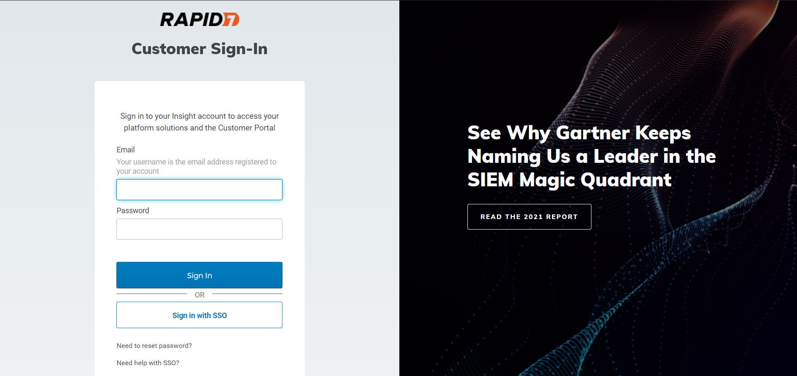 Log in to Rapid7.
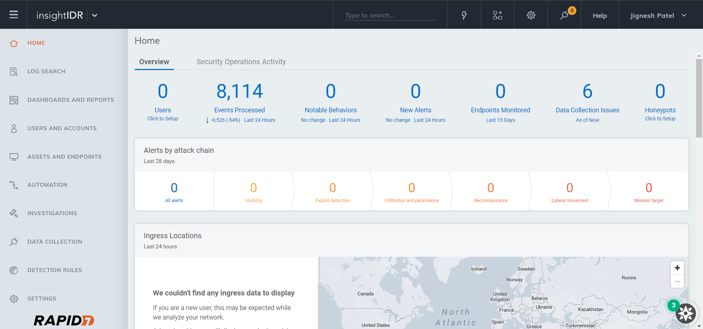 Click Data Collection, Collectors and then click Download Collector. Download the Collector for your OS.
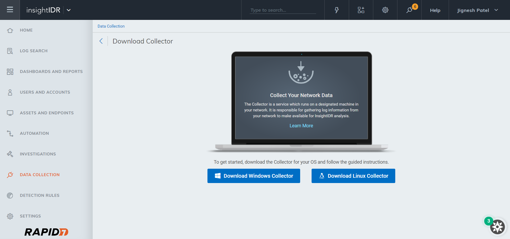 Install the Collector to your machine. (Installation Steps: Collector Installation and Deployment | InsightIDR Documentation)
Click Data Collection, Event Sources, and then click Add Event Source.
Scroll down and select Custom Logs.
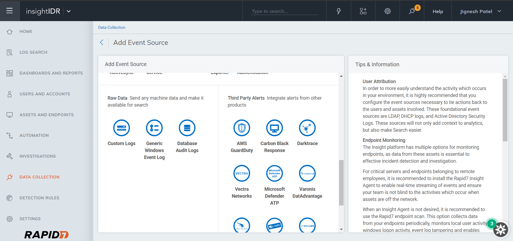 Select the Collector you activated. Enter a Name Event Source and select your Timezone.
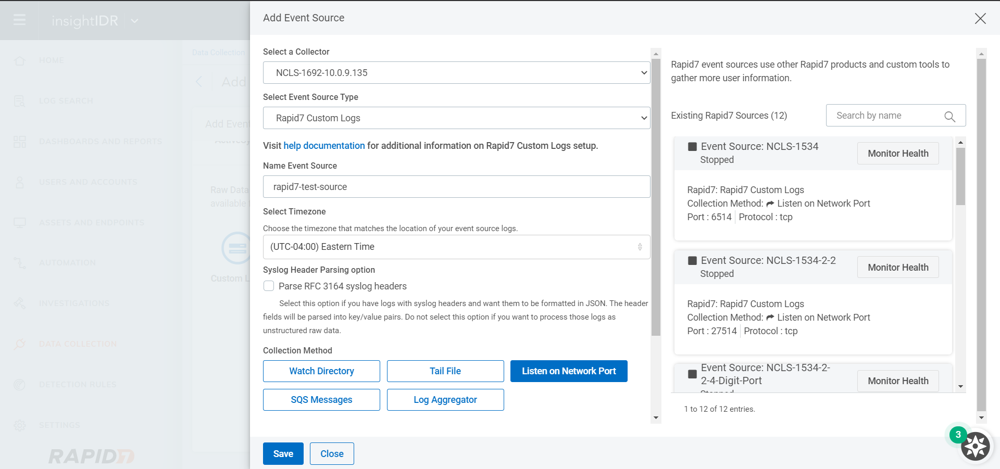 Click Listen on Network Port, enter a Port Number, and then select a Protocol.
Click Save.
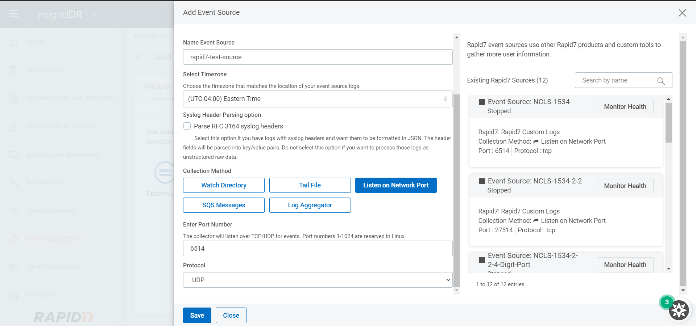 Click Data Collection and then Event Sources to see the configured Event source.

Go to Settings > Plugins.
Select the Rapid7 box to open the plugin creation dialog.
Enter a Configuration Name.
Select a valid Mapping (Default Mapping for all plugins are available).
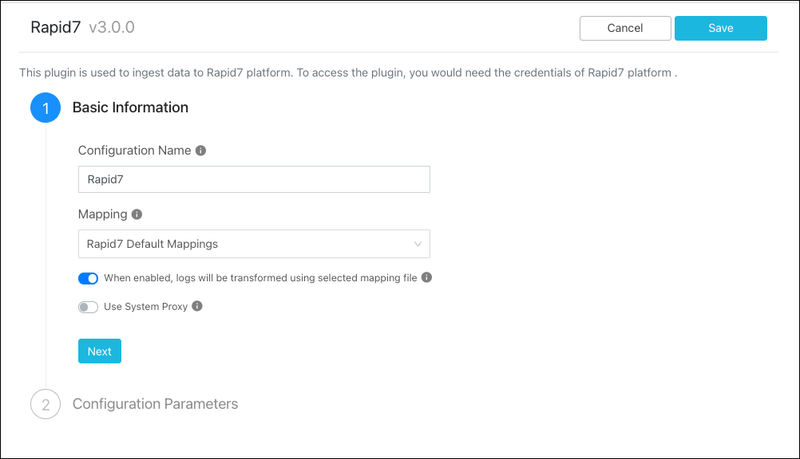 Click Next.
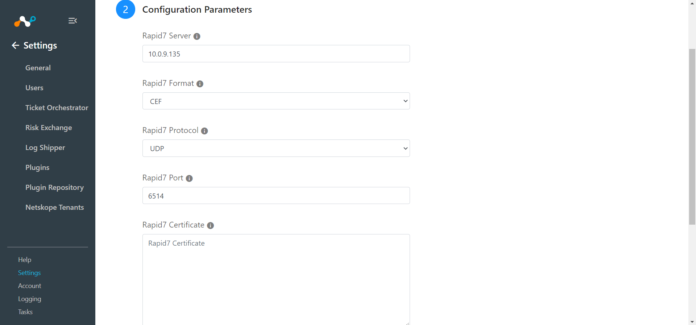 Enter your Rapid7 Server, information, select a Rapid7 Format and Rapid7 Protocol, and then enter your Rapid7 Port and Rapid7 Certificate information.
Enter Valid Extensions if you have others than the default.
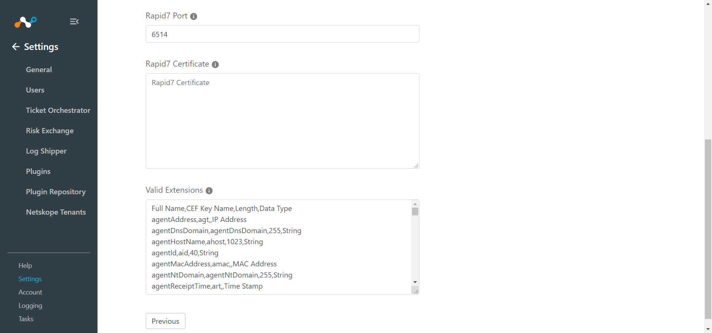 Click Save.
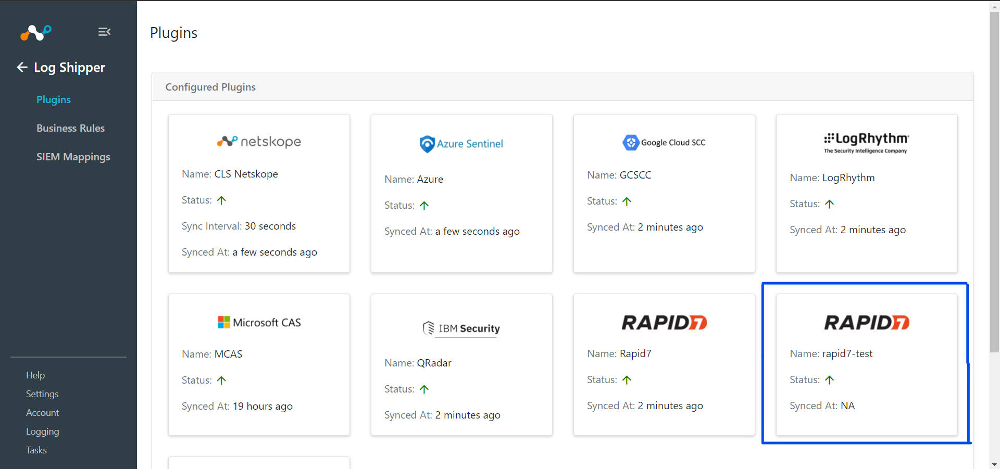
Go to Log Shipper > Business Rules.
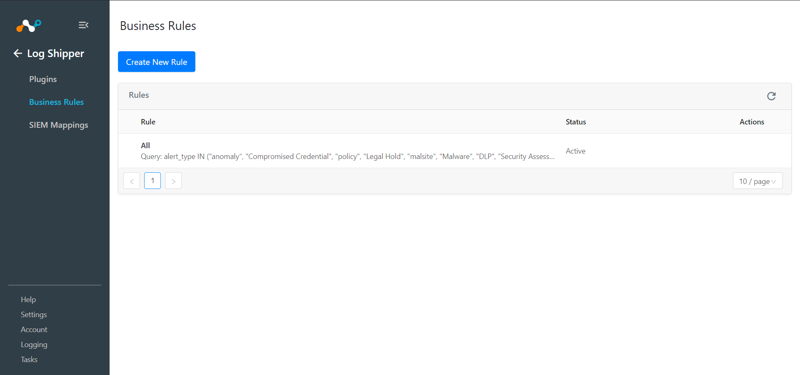 Click Create New Rule.

Enter a Rule Name and select the filters to use.
Click Save .

Go to Log Shipper > SIEM Mappings and click Add SIEM Mapping.

Select a Source Configuration, Business Rule, and Destination Configuration.
Click Save.
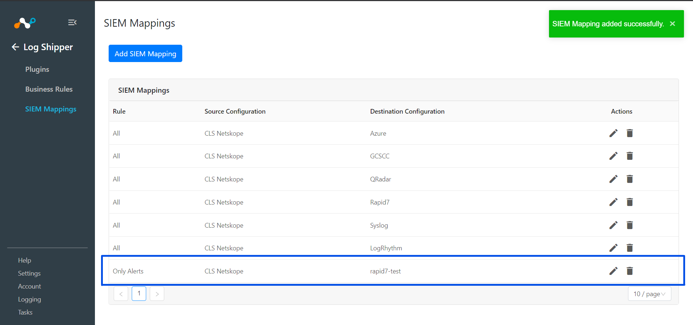
To validate the plugin workflow, you can check from Netskope Cloud Exchange and from Rapid7 instance.
To validate from Netskope Cloud Exchange, go to Logging.
 |
To validate from the Rapid7 instance, there are 2 ways.
From Data Collection:
Go to Data Collection > Event Sources.
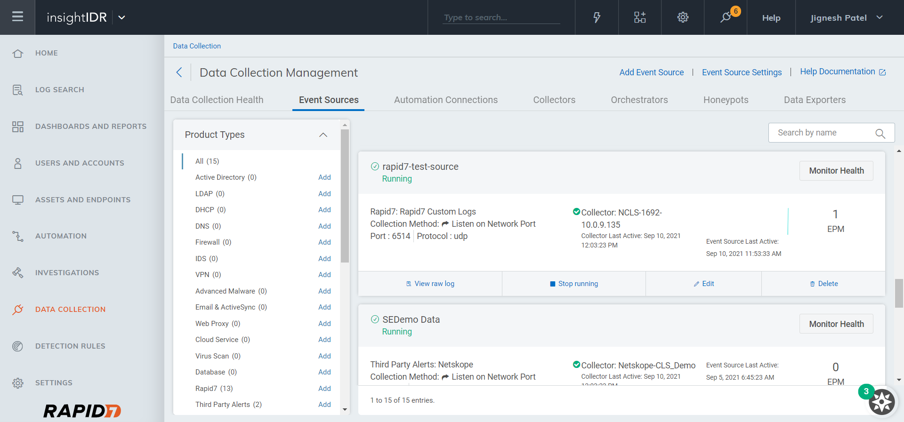 Click View raw log for a configured event source to see ingested data.
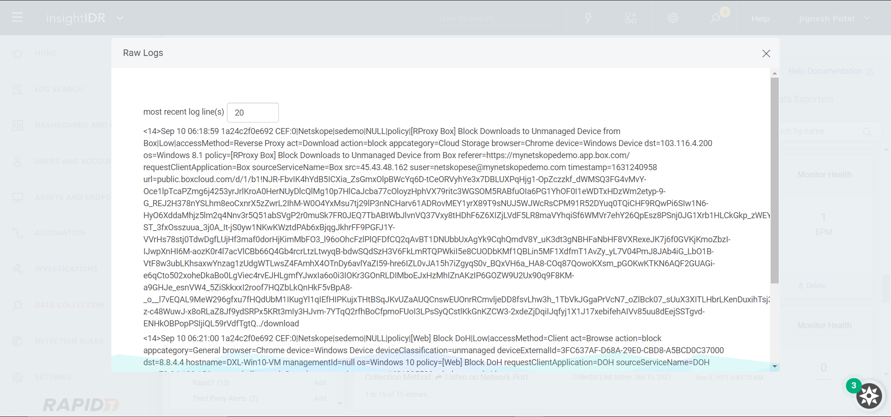
From Log Source:
Click Log Source and select configured event source to see logs.
| 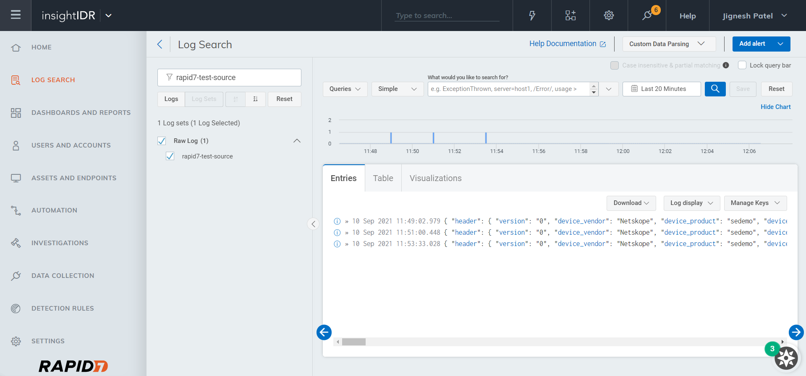 |